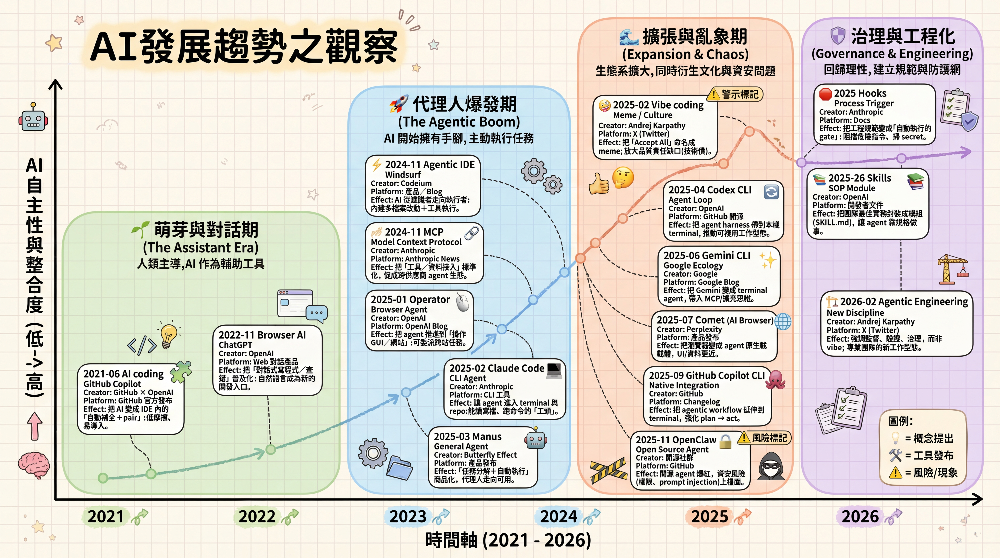

從 Vibe Coding 到 Agentic Engineering：AI 開發工作流的演進

Karpathy 的啟蒙 + 一年實踐反思
序言：Karpathy 的推文
2025 年 2 月 5 日，Andrej Karpathy 發了一個推文，回顧了"vibe coding"這個概念從推出到現在（一年後）的演進：
A lot of people quote tweeted this as 1 year anniversary of vibe coding. Some retrospective -
I've had a Twitter account for 17 years now (omg) and I still can't predict my tweet engagement basically at all. This was a shower of thoughts throwaway tweet that I just fired off without thinking but somehow it minted a fitting name at the right moment for something that a lot of people were feeling at the same time, so here we are: vibe coding is now mentioned on my Wikipedia as a major memetic "contribution" and even its article is longer. lol
最重要的是這一段：
The one thing I'd add is that at the time, LLM capability was low enough that you'd mostly use vibe coding for fun throwaway projects, demos and explorations. It was good fun and it almost worked. Today (1 year later), programming via LLM agents is increasingly becoming a default workflow for professionals, except with more oversight and scrutiny. The goal is to claim the leverage from the use of agents but without any compromise on the quality of the software.
他定義了一個新術語："agentic engineering"
- "agentic" because the new default is that you are not writing the code directly 99% of the time, you are orchestrating agents who do and acting as oversight.
- "engineering" to emphasize that there is an art & science and expertise to it. It's something you can learn and become better at, with its own depth of a different kind.
核心轉變：從 Vibe 到 Engineering
2025年初"] -->|LLM 能力提升| B["🤖 Agentic Engineering
2026年今日"] A -->|特點| A1["✓ 快速探索
✓ 娛樂項目
✓ 低開銷
✗ 難以維護
✗ 品質不穩"] B -->|特點| B1["✓ 專業工作流
✓ 代理人自主
✓ 強監督
✓ 品質保證
✓ 可交付"] style A fill:#ffcccc,stroke:#ff6666,color:#000 style B fill:#ccffcc,stroke:#66ff66,color:#000 style A1 fill:#ffe6e6 style B1 fill:#e6ffe6
一年前，Karpathy 說"vibe coding"時，LLM 的能力還不足以支撐生產環境的代碼。程式設計師可以"把手交給 AI"，但結果往往只能用於演示、探索或快速驗證方向。
到了 2026 年的今天，情況發生了根本的轉變：LLM 代理人已經開始成為專業開發的默認工作流。但這不是簡單的能力提升，而是整個工程文化的轉變——從"快速但不穩定"升級到"快速且可交付"。
從 Vibe 到 Agentic Engineering 的本質差異：
| 維度 | Vibe Coding（2025年初） | Agentic Engineering（2026年今日） |
|---|---|---|
| 目標用途 | 演示、探索、快速驗證 | 生產系統、日常工作流 |
| 代碼品質 | "看起來能跑"就可以 | 必須經過驗收測試、規格檢驗 |
| 可維護性 | 低（幾乎無法擴展） | 高（有清晰的邊界和文檔） |
| 成本代價 | 便宜但容易堆債務 | 前期投入工程實踐，長期降低成本 |
一、介面在變，但變的方向很一致
ChatGPT對話"] E["💻 IDE
Cursor Composer"] C["🖥️ CLI
git, npm, etc"] A["🤖 Agent
完整工作流"] B -->|能力提升| E E -->|緊密整合| C C -->|自主決策| A B -->|職責| B1["打字員
手工編寫每一行"] E -->|職責| E1["pair程式員
審查修改，跨文件協作"] C -->|職責| C1["工地工頭
觸發測試，管理流程"] A -->|職責| A1["工程師
定策略，設邊界，監督"] style B fill:#e6f3ff style E fill:#fff3e6 style C fill:#f3e6ff style A fill:#e6ffe6
回頭看這兩年，開發者與 AI 互動的介面一直在演進。而且這個演進的方向非常清晰——介面越貼近真實工作流，AI 的行動半徑就越大，開發者的職責就越往上移。
四個階段的演進
第一階段：瀏覽器（Browser）
- 介面：ChatGPT 的對話框
- 開發者角色："打字員"——手工編寫每一行代碼
- 特點：快速問答，但每行代碼都要手工過一遍
第二階段：編輯器（IDE）
- 介面：Cursor Composer、GitHub Copilot
- 開發者角色："Pair 程式員"——審查修改，跨文件協作
- 特點：AI 開始理解項目的上下文，可以修改多個文件
第三階段：命令列（CLI）
- 介面：集成到 git、npm、測試框架
- 開發者角色："工地工頭"——觸發測試，管理 build 流程
- 特點：AI 不只寫代碼，還能執行命令、查看輸出、根據結果調整
第四階段：代理人（Agent）
- 介面：完整的工作流自動化
- 開發者角色："系統工程師"——定策略，設邊界，監督執行
- 特點：AI 可以跨工具、跨系統自主決策，但開發者掌握最終的驗收標準
關鍵洞察：介面的演進並不是"AI 變聰明了就完事"，而是開發者的價值不斷往上移——從"有沒有能跑"移到"對不對"，再移到"能不能用"，最後移到"策略對不對"。
二、Vibe Coding vs Agentic Engineering：三軸模型
2025年初" A1["Autonomy
自主性: 99%"] -->|問題| A2["Verifiability
驗證性: 0%"] A2 -->|問題| A3["Governance
治理性: 0%"] style A1 fill:#90EE90 style A2 fill:#FFB6C1 style A3 fill:#FFB6C1 end subgraph "Agentic Engineering
2026年今日" B1["Autonomy
自主性: 90%"] -->|平衡| B2["Verifiability
驗證性: 90%"] B2 -->|控制| B3["Governance
治理性: 90%"] style B1 fill:#90EE90 style B2 fill:#90EE90 style B3 fill:#90EE90 end A1 -.->|升級| B1 A2 -.->|補上| B2 A3 -.->|補上| B3
不只是名字不同，核心是在三個維度上的根本轉變。我用三條軸來描述這個差異——自主性、驗證性、治理性。
自主性（Autonomy）
Vibe Coding 的自主性是 99%：代理人幾乎可以在沒有約束的情況下任意決策。你告訴 AI"寫一個登錄系統"，它就會寫，中間不問為什麼、不檢查邊界、不考慮既有的架構。結果往往是快速但不可控。
Agentic Engineering 的自主性是 90%：代理人仍然有很高的自主性，但被框在清晰的邊界裡。你告訴 AI"按照這個設計文件寫登錄系統"，AI 在執行時會持續檢查自己是否超出邊界。
驗證性（Verifiability）
Vibe Coding 的驗證性是 0%："看起來對"就當作對了。你運行代碼，沒有 crash，就假設功能正確。但這種"看起來對"往往是虛幻的——可能邊界情況沒考慮、性能不達標、資安有漏洞。
Agentic Engineering 的驗證性是 90%：結果必須通過自動化測試、規格檢驗、code review。不是"看起來對"，而是"測試、規格和日誌可以證明它對"。
治理性（Governance）
Vibe Coding 的治理性是 0%：沒有權限控制、沒有操作日誌、沒有回滾策略。如果代理人做錯了，你只能從頭來過。
Agentic Engineering 的治理性是 90%：完整的治理體系——誰在什麼時間做了什麼決定，所有決定都有日誌；如果出錯，可以安全地回滾到某個檢查點；危險操作需要二次確認。
這三軸合在一起就構成了從 Vibe 到 Agentic 的根本轉變：不是 AI 變聰明了，而是整個系統從"快速探索"升級到"可控的自動化"。
三、中間那座橋：DDD、SDD、TDD 不是老派，是救命的
固定語言邊界"] DDD -->|Step 2| SDD["📋 SDD: 設計文件
制定可委派的規格"] SDD -->|Step 3| TDD["✅ TDD: 測試驅動
自動化驗收"] TDD -->|Result| Safe["🛡️ 安全交付
質量有保證"] style Start fill:#fff3cd style DDD fill:#d1ecf1 style SDD fill:#d1ecf1 style TDD fill:#d1ecf1 style Safe fill:#d4edda
Karpathy 在推文中強調："The goal is to claim the leverage from the use of agents but without any compromise on the quality of the software."
這意味著我們必須補上三層工程範式。這些技術看起來"老派"，但對於 agentic engineering 來說，它們是必須的基礎設施。
DDD：領域驅動設計（Domain Driven Design）
核心價值：把語言固定。
代理人最容易犯的錯是"創意過度"——用了你沒定義過的名詞、創造了你沒想過的概念邊界。DDD 通過 Ubiquitous Language（通用語言）來避免這個問題：
- 名詞一致：什麼叫"用戶"？什麼叫"會話"？什麼叫"交易"？一旦定義了，所有代碼和文檔都用這個詞
- 邊界清晰：這個模組負責什麼，不負責什麼？模組之間的交互邊界在哪裡？
- 不變規則（Invariant）：有哪些規則是"絕對不能違反的"？寫成代碼，讓代理人知道"這裡不能碰"
實踐案例：我在設計筆記系統時，先定義了"Note"這個概念必須包含什麼、不能包含什麼。代理人在生成代碼時就會自動遵守這個邊界，而不是發明新的字段。
SDD：設計文件（Software Design Document）
核心價值：讓代理人可以"照著走"。
一份好的設計文件不是寫給人看的長篇大論，而是寫給代理人看的"可委派的規格"。它應該包括：
- 範圍和目標：這個功能是什麼，達到什麼目標
- 模組邊界：分成幾個部分，各部分的責任是什麼
- 介面契約：每個模組之間怎麼通訊，輸入輸出格式是什麼
- 失敗模式：什麼情況下會出錯，應該怎麼處理
- 資安模型：誰能訪問什麼，有哪些資安約束
- 上線和回滾策略：怎麼分階段推出，出問題了怎麼回滾
實踐案例：我在讓代理人實現一個新的 API 端點時，先寫了 SDD。結果代理人不只寫了代碼，還自動添加了所有我沒明確要求的東西——錯誤處理、參數驗證、日誌記錄——因為設計文件中有這些要求。
TDD：測試驅動設計（Test Driven Development）
核心價值：先定義"對"，再寫實現。
我不要求自己每次都嚴格到 Red/Green/Refactor，但底線是：
- 先有驗收測試：什麼樣的輸入應該產生什麼樣的輸出？定義好
- 每次修改都要跑測試：代理人改代碼，自動化測試馬上跑，沒過就修
- Bug 出現時先補 regression test：遇到 bug 不要急著修，先寫個測試證明 bug 存在，然後修改實現讓測試通過
實踐案例：有一次代理人實現了"分頁"功能，但沒有考慮"最後一頁有少於 pageSize 的元素"這種邊界情況。因為測試沒有覆蓋，我沒發現。後來我補了這個 test case，代理人才修複了實現。
為什麼這三個不能少？
- DDD 確保概念不會亂套
- SDD 確保代理人有明確的目標而不是"隨意發揮"
- TDD 確保結果可以被驗證
三個合在一起，才能把"快速的自動化"變成"可靠的自動化"。
四、工程化三件套：MCP、Hooks、Skills
標準插槽"] end subgraph "能力層" Skills["💡 Skills
可版本化的 SOP"] Hooks["🚪 Hooks
強制機制"] end subgraph "Agent" Agent["🤖 AI Agent"] end FS --> MCP DB --> MCP API --> MCP CI --> MCP MCP -->|接得到| Agent Skills -->|會做| Agent Hooks -->|做得對| Agent Agent -->|結果| Result["✅ 可交付的代碼"] style MCP fill:#ffffcc style Skills fill:#ccffcc style Hooks fill:#ccccff style Agent fill:#ffcccc style Result fill:#90EE90
這三個工具分別解決"接得到"、"會做"、"做得對"三個問題。
MCP：連接系統（Model Context Protocol）
問題：代理人怎麼訪問外部系統？
每次都要 hardcode 一個新的 API 調用會很麻煩。MCP 提供了一個標準的插槽：代理人通過 MCP 可以用統一的方式訪問：
- 檔案系統（讀寫文件）
- 資料庫（查詢、更新數據）
- 工單系統（查看、建立 task）
- 內部 API（調用已有的服務）
- CI/CD 系統（觸發 build、測試）
實踐案例：我設定了一個 MCP 連接，讓代理人可以直接讀取我的 git history。結果在生成提交說明時，它會自動參考既有的提交風格，保持風格一致。
Skills：能力模板（Capabilities as Code）
問題：我們反覆做的事情怎麼變成"能力"，讓代理人穩定執行？
Skills 就是把"最佳實務"模板化、版本化：
- "寫一個 REST API"：定義一個 skill，包含文件夾結構、命名規範、錯誤處理方式、文檔要求
- "添加單元測試"：定義一個 skill，包含使用什麼測試框架、怎麼組織 test case、覆蓋率要求
- "代碼審查清單"：定義一個 skill，包含審查時的檢查項目、常見的 bug pattern、風格問題
代理人載入這些 skill，就會"記住"你團隊的做事方式，而不是每次都從零開始對話。
實踐案例：我為"生成結構化筆記"定義了一個 skill，裡面包含必須的章節、必須的圖表類型、內容樣式。後來只要上傳新的內容，代理人就會自動按照這個 skill 生成筆記。
Hooks：強制機制（Gates and Checks）
問題：如何確保代理人遵守規則，而不只是靠"提醒"？
Hooks 把規範從"建議"變成"強制"：
- Pre-commit hook：代碼提交前，自動跑 lint、跑單元測試、掃 secret。不通過就不給提交
- Pre-merge hook：merge 前，檢查是否有必要的審查、測試覆蓋率是否達標
- Post-deploy hook：上線後，自動檢查是否有異常日誌、性能指標是否合格
實踐案例：我設了一個 hook，任何代碼提交必須附帶至少一個測試。代理人生成代碼時，系統會自動檢查，如果沒有測試就不給 merge。後來代理人學會了"先寫測試，再寫實現"。
這三件套的威力在於：它們不是"指導"，而是"系統"。系統會自動執行，不依賴於人的紀律或代理人的"記性"。
五、從 Vibe 到 Agentic 的落地路徑
寫驗收規格"] B["第 2 步
包裝成 Skills & Hooks"] C["第 3 步
擴大 Agent 半徑"] A --> A1["✓ Contract Test
✓ 機器可驗證
✓ 看得出證據"] B --> B1["✓ Skills 版本化
✓ Hooks 自動化
✓ 規範成機制"] C --> C1["✓ MCP 連接系統
✓ 唯讀→寫入漸進
✓ 完整可追溯"] style A fill:#fff3cd style B fill:#fff3cd style C fill:#fff3cd
如果要在你的組織裡推行這個轉變，建議三步走：
第一步：先把驗收寫成機器能跑的東西
關鍵路徑：contract test + validation rules
不要先急著寫生產代碼。先定義"什麼樣的輸入應該產生什麼樣的輸出"。寫成自動化測試，讓機器能驗證。
為什麼這一步最重要：因為沒有驗收標準，後面什麼都站不住。代理人可以隨意解釋需求，你也沒辦法說"不對"。
實踐時間：一個功能的驗收測試通常花 20% 的時間，但能減少後面 80% 的問題。
第二步：把流程做成 Skills，把規範做成 Hooks
關鍵路徑：把反覆用到的做法模板化，把不能妥協的規範自動化
這一步很容易走偏——不能急著擴大 agent 的行動範圍，要先把內部流程固化。
實踐時間：這一步會花一些時間定義 skills 和 hooks，但後續使用會快很多。
第三步：再擴大代理人的行動半徑，用標準協議去接系統
關鍵路徑：MCP + 權限隔離 + 完整可追溯
先接唯讀系統（讀文件、查數據庫），驗證没问题了再接寫入系統。權限最小化，所有操作都有日誌。
這一步不能急：如果前兩步沒做扎實，貿然擴大 agent 的權限會很危險。
六、2026 年看到的競爭方向
誰的模型更聰明"] New["2026+
誰的制度更成熟"] Old -->|轉向| New New --> N1["權限邊界
審計日誌
可回滾機制"] New --> N2["工程規範
變成系統預設
用 hooks & gates"] New --> N3["經驗沉澱
變成可移植的能力
用 skills & playbooks"] style Old fill:#ffcccc style New fill:#ccffcc style N1 fill:#e6ffe6 style N2 fill:#e6ffe6 style N3 fill:#e6ffe6
Karpathy 說："In 2026, we're likely to see continued improvements on both the model layer and the new agent layer."
我的觀察是，競爭的重心會從"誰的模型更聰明"轉向"誰的制度更成熟"：
不再比的：
- 模型的推理能力（所有主流模型都夠強了）
- 代碼生成的準確率（都差不多）
開始比的：
- 誰能把代理人納入可治理的體系 — 權限、審計、回滾，一個都不能少
- 誰能把工程規範變成系統預設 — 用 hooks 和 gates 取代口頭約定
- 誰能把經驗沉澱成可移植的能力 — 用 skills 和 playbooks 讓知識不只留在人的腦袋裡
工程師的價值也會更往上走：
- 領域語意與邊界的掌握 — 知道什麼該讓 agent 做，什麼不該
- 架構取捨與決策 — 設計系統讓 agent 可以穩定運作
- 驗收與品質策略 — 定義"對"的標準，讓機器自動驗證
- 資安與治理 — 在賦權的同時保持控制
這些東西，目前還是人做得比機器好。
七、我腦中的演化鏈（一年實踐反思）
結合 Karpathy 的框架和我一年的實踐，整個演化鏈是這樣的：
第一階段：Vibe Coding（2025年初）
特點：快速但不穩定。"給代理人任務，它會生成代碼，有時能用，有時不能用。"
為什麼不夠？因為當代碼進入生產環境，不穩定就變成了故障。
第二階段：補工程範式（DDD + SDD + TDD）
發現：只有 AI 快是不夠的，還要"對"。為此，需要先把 requirements 定清楚、把邊界劃清楚、把驗收定清楚。
這一步讓代碼變得可驗證、可維護。但問題是：手工執行這些規範太累。
第三階段：工程化三件套（MCP + Skills + Hooks）
發現：不能只靠人的紀律。要把規範變成系統能自動執行的東西。MCP 解決"接得到"，Skills 解決"會做"，Hooks 解決"做得對"。
第四階段：Agentic Engineering（2026年今日）
結果：代理人有 90% 的自主性（足以獨立工作），但被框在清晰的邊界裡（不會亂來）；結果有 90% 的驗證性（可以自動證明對錯）；整個過程有 90% 的治理性（所有決定都有跡可循）。
這個演化鏈的本質：不是 AI 一路進化，而是開發者的工作方式在進化——從"手工每一行代碼"進化到"定義規格和邊界，讓 AI 在框架內工作"。
寫在最後
Karpathy 說："I feel excited about the product of the two and another year of progress."
我也很興奮。這一年不是模型變聰明就完事了，而是整個軟體工程的工作流被重新定義了。
回到最初的感受：vibe coding 那種"把手交出去"的快感，我會一直保留。快速探索、快速試錯、不怕犯錯的精神，這是我做創意工作時最需要的。
但一旦要交付，我就會切換到 agentic engineering 的模式：
- 規格要寫清楚（DDD/SDD）— 這樣代理人才知道邊界在哪
- 驗收要自動化（TDD）— 這樣結果才能被機器驗證
- 流程要制度化（Skills/Hooks）— 這樣規範才能自動執行
- 系統要標準化（MCP）— 這樣代理人才能安全地觸及外部系統
只有這樣，我才敢真正地把槓桿開到最大。
最後一句話，借用 Karpathy 的話重新理解：
"It's something you can learn and become better at, with its own depth of a different kind."
Agentic engineering 就是這樣的東西——不是魔法，不是"有了 AI 就不用寫代碼"，而是一種新的、可以學習和精進的工程實踐。它有自己的深度，需要時間去理解、去實踐、去領悟。
但它值得。
延伸閱讀
延伸閱讀
- Karpathy 原推文： https://x.com/karpathy/status/2019137879310836075
- Karpathy 前年的 "vibe coding" 推文： https://x.com/karpathy/status/1839936091733385654
- Cursor Composer 文檔： https://www.cursor.com/
- MCP 官方規格： https://modelcontextprotocol.io/